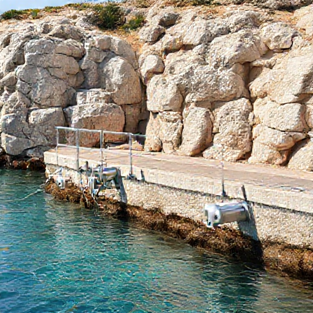

HAM Estructuras Metalicas
Fabricacion y montaje de estructuras metalicas, herreria y soluciones a medida en Menorca.
Av. Circunvalacio, 11, Poligono de Sant Lluis, 07710 Sant Lluis, Menorca
info@hamenorca.com - +34 971 35 20 18 - WhatsApp +34 669 769 541
www.hamenorca.com
Presupuesto Técnico: Fabricación e Instalación de Barandillas de Acero Inoxidable Lacadas y Pasarela de Tramex PRFV
Presupuesto para la fabricación a medida de 14 ML de barandilla de acero inoxidable AISI 316 (pletina 50x10, pasamanos Ø43 mm y 3 líneas de Ø20 mm) con imprimación y acabado lacado blanco marino, más el suministro e instalación de suelo de tramex de PRFV sobre soporte amurado de tubo inox 80x40 mm en ambiente costero de Menorca.

Email: | Tel.:
Obra:
NIF/CIF: | Referencia:
Desglose de partidas
| Capitulo | Concepto | Cant. | Ud. | EUR/Ud. | Importe |
|---|---|---|---|---|---|
| Diseno | Toma de medidas, diseño técnico y planos de despiece Levantamiento de cotas en obra, replanteo de anclajes y preparación de despiece técnico para taller. | 4.00 | h | 42.00 | 168.00 |
| Materiales | Perfilería de acero inoxidable AISI 316 para barandillas (14 ML) Postes verticales en pletina 50x10 mm, pasamanos superior en tubo Ø43 mm y 3 barras horizontales intermedias en tubo Ø20 mm. | 14.00 | ml | 62.40 | 873.60 |
| Materiales | Placas de rejilla Tramex PRFV (Poliéster Reforzado con Fibra de Vidrio) Placas de tramex de PRFV anticorrosivo de 1x2 m (2 placas completas + 1 placa para fraccionamiento de tramo de 1 ML x 0,60 m). | 2.00 | ud | 480.00 | 960.00 |
| Materiales | Tubo estructural de acero inoxidable AISI 316 80x40 mm Estructura de soporte amurada a pared para apoyo y fijación de la rejilla de tramex PRFV. | 2.00 | ml | 42.00 | 84.00 |
| Materiales | Kit de anclajes químicos y tornillería inoxidable A4 Tacos químicos de alta resistencia, varillas roscadas y tornillería A4 (AISI 316) para fijación al suelo y soporte de pared. | 1.00 | lote | 150.00 | 150.00 |
| Fabricacion | Mano de obra de taller: corte, mecanizado y soldadura TIG Conformado de marcos, corte e ingletado de perfiles, soldadura TIG en inoxidable y esmerilado de cordones. | 24.00 | h | 36.00 | 864.00 |
| Tratamiento | Tratamiento superficial anticorrosivo C4 y acabado blanco Preparación de superficie sobre inoxidable, imprimación epoxi de alta adherencia y pintura poliuretano líquida/lacado en blanco apto ambiente salino de Menorca. | 14.00 | ml | 30.00 | 420.00 |
| Transporte | Transporte de material y medios auxiliares a obra en Menorca Desplazamiento de perfiles, placas de tramex y herramientas hasta el lugar de instalación. | 1.00 | lote | 216.00 | 216.00 |
| Montaje | Mano de obra de montaje e instalación en obra Presentación de barandillas (14 ML), perforación de soporte, sellado químico, fijación de tramex PRFV sobre tubo 80x40 mm y retoques finales. | 16.00 | h | 42.00 | 672.00 |
Total estimado: 4407.60 EUR + IVA
Validez: 30 dias desde la fecha de emision.
Forma de pago: 100% a la aceptacion del presupuesto.
Supuestos
- Se presupuesta acero inoxidable calidad AISI 316 por defecto al tratarse de una obra en Menorca.
- Para cubrir los 2 tramex de 1x2 ml y el tramo adicional de 1 ML x 0,60 m se contemplan 3 placas comerciales completas de 1x2 ml.
- El acabado sobre inoxidable incluye tratamiento de imprimación epoxi química especial para garantizar adherencia antes del poliuretano blanco C4/C5.
- El margen industrial y de gestión se ha prorrateado de forma proporcional (+20%) en los precios unitarios del resto de partidas.
Riesgos y datos pendientes
- Pérdida de adherencia del esmalte blanco sobre acero inoxidable si la superficie no recibe un pasivado/imprimación epoxi de máxima calidad.
- Desniveles o irregularidades en el suelo/muro de obra que requieran calzos o pletinas de nivelación suplementarias durante el montaje.
- ¿La ubicación exacta del montaje está expuesta directamente a primera línea de mar?
- ¿El pintado/lacado blanco sobre acero inoxidable requiere un código RAL blanco específico (ej. RAL 9010 o 9016)?
- ¿El piso donde se atornillan las 2 placas de tramex PRFV es forjado de hormigón sano o solera sobre terreno?